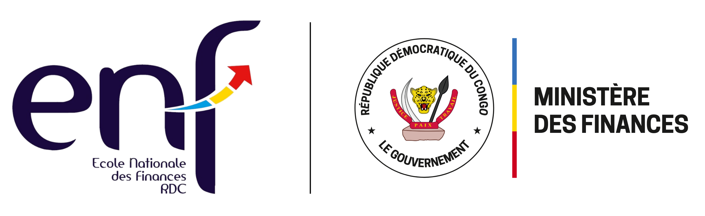

L'École Nationale des Finances propose un ensemble de formations continues et certifiantes destinées aux agents publics, cadres des régies financières, administrations centrales et services provinciaux.
Ces formations visent le renforcement des capacités techniques, la professionnalisation des pratiques et l'adaptation aux réformes des finances publiques.